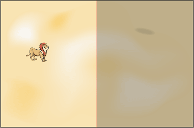
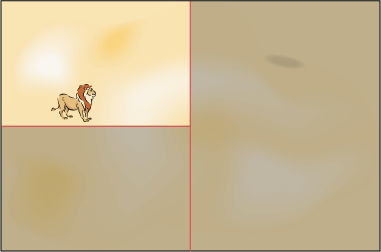
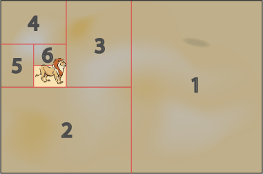

Ловля льва методом дихотомии основана на последовательном делении пустыни на две части. Вначале разбиваем пустыню пополам, после чего отбрасываем ту часть пустыни, где льва нет (на иллюстрации она помечена тёмным цветом).

На следующем шаге оставшуюся часть снова делим пополам, но уже горизонтально, при этом отбрасывая часть пустыни, где льва нет.

Последовательное деление пустыни по вертикали и горизонтали продолжается до тех пор, пока оставшаяся часть по размерам не будет сопоставима с размерами клетки. Остается только накрыть полученный участок клеткой и лев окажется пойман.
